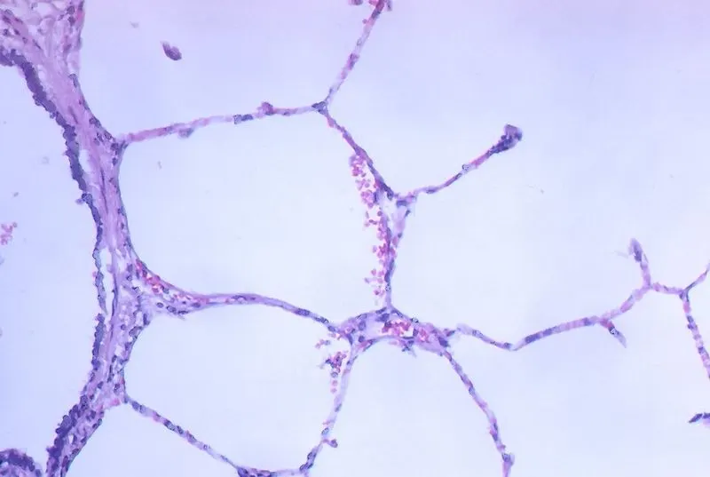
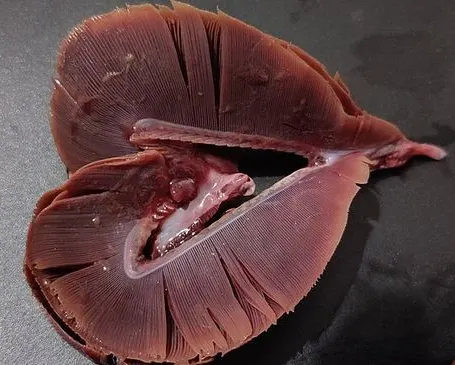

Cambridge Primary Checkpoint · Science 0097 · Stage 6 · Biology
The Lungs and Respiratory System
The parts of the respiratory system, how oxygen moves from the air into the blood in the lungs, the difference between the air we breathe in and out, breathing rate and exercise, and how other vertebrates compare.
British & IGCSE › Checkpoint 6 › Checkpoint 6 Science — Complete Course
- Describe the human respiratory system: oxygen from the air moves into the blood in the lungs (6Bs.02)
- Know that many vertebrates have a similar system (6Bs.02)
- Skills used on this page: using a model of the chest, reading bar charts and tables, repeating measurements, explaining patterns (6TWSm.01, 6TWSa.05, 6TWSc.04, 6TWSa.03)
Your cells need oxygen all the time. Oxygen is a gas in the air. The job of the respiratory system is to get oxygen from the air into the blood, and to get rid of the waste gas carbon dioxide. The blood (circulatory system) then carries the oxygen to every cell. The two systems always work together.
| Word / phrase | Meaning / use |
|---|---|
| respiratory system | الجهاز التنفسي — the organs we breathe with |
| lungs | الرئتان — the organs where oxygen enters the blood |
| windpipe (trachea) | القصبة الهوائية — the tube from the throat to the lungs |
| bronchus (bronchi) | شُعبة هوائية — one of two tubes from the windpipe into each lung |
| air sacs (alveoli) | الحويصلات الهوائية — tiny bags at the ends of the tubes in the lungs |
| diaphragm | الحجاب الحاجز — a sheet of muscle under the lungs |
| ribs | الضلوع — bones that protect the lungs and move when you breathe |
| inhale / breathe in | شهيق — air goes into the lungs |
| exhale / breathe out | زفير — air comes out of the lungs |
| carbon dioxide | ثاني أكسيد الكربون — the waste gas we breathe out |
| gills | الخياشيم — the organs fish use to take oxygen from water |
Parts of the respiratory system
| Part | What it does |
|---|---|
| Nose and mouth | Air enters here. The nose warms the air and traps dust in hairs and sticky mucus. |
| Windpipe (trachea) | A tube that carries air from the throat down to the chest. Rings of cartilage keep it open. |
| Bronchi (one bronchus to each lung) | Two tubes that carry air into the left and right lung. Inside the lungs they branch again and again into smaller tubes. |
| Air sacs (alveoli) | Millions of tiny bags at the ends of the smallest tubes. Here oxygen moves into the blood. |
| Lungs | Two spongy organs in the chest, made of all the tubes, air sacs and capillaries. |
| Ribs | Protect the lungs and heart; they move up and out when you breathe in. |
| Diaphragm | A dome-shaped sheet of muscle under the lungs; it moves down when you breathe in. |
The path of air: nose or mouth → windpipe → bronchi → smaller tubes → air sacs. To breathe out, air goes the opposite way.
How oxygen gets into the blood
Each tiny air sac is wrapped in capillaries (the smallest blood vessels). The wall of the air sac and the wall of the capillary are both very thin — only one cell thick. So:
- Oxygen moves from the air in the air sac, through the thin walls, into the blood.
- Carbon dioxide moves from the blood into the air sac, and is breathed out.
- The blood, now rich in oxygen, goes to the heart, which pumps it around the body (see The Heart and Circulatory System).
The lungs are very good at this job because they have millions of air sacs (together they give a huge surface for oxygen to pass through), the walls are very thin, and there are lots of capillaries carrying blood past the air sacs all the time.

في الرئتين فيه ملايين الحويصلات الهوائية (air sacs) وحواليها شعيرات دموية. الأكسجين بيعدّي من الهوا اللي في الحويصلة إلى الدم، وثاني أكسيد الكربون بيخرج من الدم للحويصلة وبنطلّعه في الزفير. احفظ الجملة دي: Oxygen from the air moves into the blood in the lungs.
Breathing in and breathing out
| Breathing in (inhaling) | Breathing out (exhaling) | |
|---|---|---|
| Diaphragm | contracts, flattens and moves down | relaxes and moves back up into a dome |
| Ribs | move up and out | move down and in |
| Space inside the chest | gets bigger | gets smaller |
| Air | rushes in to the lungs | is pushed out of the lungs |
A model of the chest: a plastic bottle with the bottom cut off, a straw, two balloons and a rubber sheet. When you pull the rubber sheet down, the space inside the bottle gets bigger and air goes in through the straw, so the balloons inflate — just like breathing in. Push the sheet up and the balloons go down — like breathing out.
How the model helps: it shows that the diaphragm moving down makes the lungs fill with air — something we cannot see inside our body. Its limits: the bottle cannot move like the ribs; real lungs are not hollow balloons but are full of tiny tubes and air sacs; and there is no blood, so the model cannot show oxygen moving into the blood.
Air breathed in and air breathed out
| Gas | Air breathed in | Air breathed out | Why |
|---|---|---|---|
| Oxygen | about 21% | about 16% | Some oxygen moved into the blood in the lungs. |
| Carbon dioxide | about 0.04% | about 4% | Carbon dioxide moved out of the blood into the lungs. |
| Nitrogen | about 78% | about 78% | The body does not use nitrogen gas. |
| Water vapour | less | more | Water evaporates from the moist lining of the lungs. |
So breathed-out air has less oxygen and more carbon dioxide. Notice that breathed-out air still contains quite a lot of oxygen (about 16%) — that is why rescue breathing can help a person who has stopped breathing. Breathed-out air is also warmer and wetter: on a cold day you can see the water vapour condense as a little cloud.
Breathing is not the same as respiration. Breathing moves air in and out of the lungs. Respiration happens inside every cell: the cell uses oxygen to release energy from nutrients and makes carbon dioxide as waste. That is why cells need oxygen and why blood must take carbon dioxide away.
Breathing rate and exercise
Your breathing rate is the number of breaths you take in one minute. When you exercise, your muscles need more oxygen to release more energy and they make more carbon dioxide. So you breathe faster and deeper, to take more oxygen into the blood and remove more carbon dioxide. At the same time your heart beats faster to carry the blood more quickly.
Keeping lungs healthy: dust and smoke can damage the tiny air sacs, so they let less oxygen into the blood. This is one reason why breathing smoke (including cigarette smoke) is harmful.
Other vertebrates
Many vertebrates have a similar respiratory system: mammals, birds and reptiles breathe air into lungs, where oxygen moves into the blood. Fish live in water, so they use gills instead of lungs. Water flows over the gills, and oxygen dissolved in the water moves into the blood in the gills. The job is the same — getting oxygen into the blood — only the organ is different. Frogs (amphibians) use lungs and can also take in oxygen through their thin, moist skin.

| Animal | Takes oxygen into the blood using… |
|---|---|
| Human, camel, dolphin, whale (mammals) | lungs (whales and dolphins come to the surface to breathe air) |
| Pigeon, falcon (birds) | lungs |
| Lizard, crocodile (reptiles) | lungs |
| Frog (amphibian) | lungs and moist skin |
| Tilapia, shark (fish) | gills |
Worked examples
Worked example 1 (the path of air)
Put these in the order air passes through them when you breathe in: air sacs, windpipe, nose, bronchi. [2]
- nose → windpipe → bronchi → air sacs. 2 marks for all four in order; 1 mark if one pair is swapped.
- Think of it as big to small: the windpipe is one wide tube, the bronchi are two tubes, and the air sacs are tiny.
Worked example 2 (where oxygen enters the blood)
Describe how oxygen from the air gets into the blood. [2]
- Oxygen in the air reaches the air sacs in the lungs [1].
- It passes through the thin walls of the air sacs and the capillaries into the blood [1].
Common mistake: "The lungs pump oxygen to the body." The lungs do not pump: oxygen moves into the blood in the lungs, and the heart pumps the blood.
Worked example 3 (breathed-in and breathed-out air)
Use the table of breathed-in and breathed-out air. (a) Work out the difference in the amount of oxygen. [1] (b) Explain why breathed-out air contains more carbon dioxide. [1]
- (a) 21% − 16% = 5% less oxygen in breathed-out air.
- (b) Carbon dioxide (waste from the cells) moves from the blood into the air sacs and is breathed out.
Worked example 4 (breathing-rate investigation)
Youssef wants to find out how the time he spends jogging affects his breathing rate. He jogs for 1, 2, 3 and 4 minutes and then counts his breaths for one minute. After jogging for 3 minutes he counts 30, 32 and 31 breaths on three different days. (a) Name the independent variable. [1] (b) Name the dependent variable. [1] (c) Work out the mean breathing rate after 3 minutes. [1] (d) Predict what happens to his breathing rate as he jogs for longer, and explain. [2]
- (a) the time spent jogging
- (b) the breathing rate (number of breaths in one minute)
- (c) (30 + 32 + 31) ÷ 3 = 93 ÷ 3 = 31 breaths per minute
- (d) Prediction [1]: the breathing rate will increase the longer he jogs. Reason [1]: his muscles need more oxygen (and must get rid of more carbon dioxide), so he breathes faster to take more oxygen into the blood.
Worked example 5 (evaluating the model)
In the balloon model, what does the rubber sheet represent? Give one way the model is different from a real chest. [2]
- The rubber sheet represents the diaphragm [1].
- Different [1]: the bottle cannot move like the ribs / real lungs are not hollow balloons / there are no air sacs or blood in the model.
Worked example 6 (other vertebrates)
A tilapia fish and a camel both need oxygen. Compare how they get oxygen into their blood. [2]
- The camel breathes air into its lungs, and oxygen moves into the blood in the lungs [1].
- The fish takes oxygen from water using its gills; oxygen moves into the blood in the gills [1].
- Saying we breathe in only oxygen and breathe out only carbon dioxide. Air breathed in and out is mostly nitrogen; breathed-out air still has about 16% oxygen.
- Saying the lungs pump blood or oxygen. The heart pumps blood; oxygen moves into the blood in the lungs.
- Saying the oxygen goes "into the lungs" as the full answer. The objective is that oxygen moves from the air into the blood in the lungs.
- Mixing up the order of tubes: windpipe first, then bronchi, then air sacs.
- Saying the diaphragm moves up when you breathe in. It moves down when you breathe in.
- Saying fish have lungs. Fish use gills.
- Label a simple diagram: windpipe, lung, diaphragm, bronchus. Use the label lines carefully — the end of the line shows the part.
- "Complete the sentence: Oxygen moves from the ______ into the ______ in the lungs." → air, blood.
- Tables of breathed-in and breathed-out air: work out a difference and explain it.
- Exercise investigations: read a bar chart of breathing rates, name the variables, explain why breathing gets faster, combine with pulse rate.
- Models: "What does the rubber sheet / balloon represent?" and "Give one limitation of this model."
- Other vertebrates: say which animals use lungs and that fish use gills.
Practice
- Path of air: nose/mouth → windpipe (trachea) → bronchi → air sacs in the lungs.
- In the air sacs, oxygen moves from the air into the blood; carbon dioxide moves out of the blood and is breathed out.
- Air sacs work well because there are millions of them, their walls are very thin, and they are surrounded by capillaries.
- Breathed-out air has less oxygen (about 16%) and more carbon dioxide (about 4%) than breathed-in air.
- Exercise → muscles need more oxygen → faster, deeper breathing (and a faster heartbeat).
- Many vertebrates (mammals, birds, reptiles) breathe with lungs; fish use gills to get oxygen into their blood.
All pages in this course
Start here
- Checkpoint 6 Science: The Test and How to Prepare
- Thinking and Working Scientifically: Investigations, Variables, Tables and Graphs
Biology
- The Heart and Circulatory System
- The Lungs and Respiratory System
- Human Reproductive System and Puberty
- Diseases, Hygiene and the Body's Defences
- Food Chains, Food Webs, Energy and Toxins
Chemistry
- Properties of Substances: Melting and Boiling Points, Gases, Conductors
- Reversible Changes and Dissolving
- Boiling and Evaporation
- Chemical Reactions: Reactants, Products and Evidence
Physics
- Mass, Weight and Gravity
- Force Diagrams and Forces on Moving Objects
- Floating and Sinking
- Light: Reflection and Refraction
- Electric Circuits, Symbols, Series and Parallel
Earth and space
Practice tests